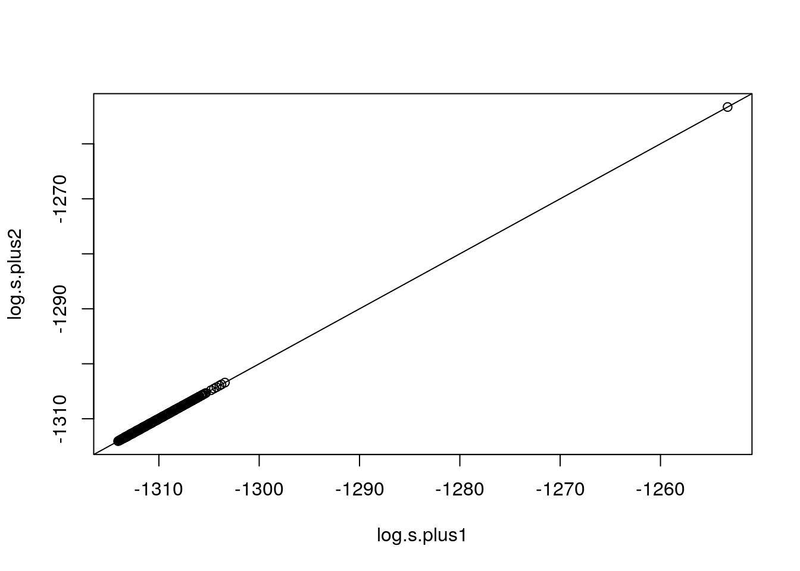

2 Simulation example
In this example, we
- specify the model setting as \(n=100, p = 1000, m = 5, \zeta = \log(n), {\boldsymbol \Psi}= 0.5{\bf I}_m, \nu = 0.5\).
- and generate data \({\bf Y}={\bf X}{\bf C}+ {\bf E}\) with \({\bf E}\sim \mathcal{N}(0, {\boldsymbol\Omega})\); The true model is \({\boldsymbol \gamma}^* = (1,2,3,4,7,8,9,10)\) and the current model \(\hat{\boldsymbol \gamma}= (1,2,3,4,7,8,9)\) with model size \(|\hat{\boldsymbol \gamma}| = 7\). \({\boldsymbol\Omega}= 0.2^{|i-j|}\) and \({\bf X}\) is generated from \(\mathcal{N}({\bf 0}, {\boldsymbol \Sigma})\) with \({\boldsymbol \Sigma}= 0.2^{|i-j|}\).
# Generate data
library(mvtnorm)
set.seed(1314)
true.model <- c(1:4, 7:10) # true model
r <- c(1:4, 7:9) # current model
k <- length(r) # current model size
rho_e <- 0.2
Omega <- rho_e^(abs(matrix(1:m, m, m) - t(matrix(1:m, m, m))))
rho_x <- 0.2
Sig_x <- rho_x^(abs(matrix(1:p, p, p) - t(matrix(1:p, p, p))))
seq.p <- c(1:p)
len.true.model <- length(true.model)
# generate random coefficient matrix C
c0 <- sample(seq(-1, 1, 0.2), size = len.true.model * m, replace = TRUE)
C <- matrix(0, p, m)
C[true.model, ] <- matrix(c0, len.true.model, m)
X <- rmvnorm(n, rep(0, p), Sig_x, method = "chol")
E <- rmvnorm(n, mean = rep(0, m), sigma = Omega)
Y <- as.numeric(X %*% C) + ETo better understand R code and corresponding notations, we list a cross-reference table for some of them as follows:\(({\bf Y}^{{ \mathrm{\scriptscriptstyle T} }}{\bf H}_{\hat{{\boldsymbol \gamma}}}{\bf Y}+{\boldsymbol \Psi})^{-1}\)|
| I_n | I_k1 | log.s.plus1 or log.s.plus2 | rUi | X.rUi | H.rUi |
| \({\bf I}_n\) | \({\bf I}_{k+1}\) | \(\log({\bf s}({\bf Y}|{\text{nbd}}_+(\hat{\boldsymbol \gamma})))\) | \(\hat{\boldsymbol \gamma}\cup i\) | \({\bf X}_{\hat{\boldsymbol \gamma}\cup i}\) | \({\bf H}_{\hat{\boldsymbol \gamma}\cup i}\) |
| log.s.Y.rUi | I_k | X.r | X_r | H.r | colSums(H.r%*%X_r*X_r) |
| \(\log(s({\bf Y}|\hat{\boldsymbol \gamma}\cup i))\) | \({\bf I}_k\) | \({\bf X}_{\hat{\boldsymbol \gamma}}\) | \({\bf X}_{-\hat{\boldsymbol \gamma}}\) | \({\bf H}_{\hat{\boldsymbol \gamma}}\) | \({\rm diag}({\bf X}_{-\hat{\boldsymbol \gamma}}^{{ \mathrm{\scriptscriptstyle T} }}{\bf H}_{\hat{{\boldsymbol \gamma}}}{\bf X}_{-\hat{\boldsymbol \gamma}})\) |
| YHX_r | |||||
| \({\bf Y}^{{ \mathrm{\scriptscriptstyle T} }}{\bf H}_{\hat{{\boldsymbol \gamma}}}{\bf X}_{-\hat{\boldsymbol \gamma}}\) |
# For loop method
I_n <- diag(1, n) # n-dimension identity matrix
I_k1 <- diag(1, k + 1)
p_r <- setdiff(seq(1, p), r) # p-k vector
log.s.plus1 <- rep(NA, length(p_r))
j <- 1
for (i in p_r) {
rUi <- sort(c(r, i)) # add one index from p_r
X.rUi <- X[, rUi] # model in addition neighbor
XtX <- crossprod(X.rUi) + 1/zeta * I_k1
H.rUi <- I_n - X.rUi %*% solve(XtX) %*% t(X.rUi)
# logarithm of Eq (1.1)
log.s.Y.rUi <- -m * (k + 1)/2 * log(zeta) - m/2 * log(det(XtX)) - (n + v)/2 * log(det(t(Y) %*% H.rUi %*% Y + Psi))
log.s.plus1[j] <- log.s.Y.rUi
j <- j + 1
}
# Proposed Method
I_k <- diag(1, k) # k-dimension identity matrix
X.r <- X[, r]
X_r <- X[, p_r] # n by p-k m sub-matrix of X
H.r <- I_n - X.r %*% solve(crossprod(X.r) + 1/zeta * I_k) %*% t(X.r) # n by n matrix
d <- 1/zeta + colSums(H.r %*% X_r * X_r) # p-k dimension vector
YHX_r <- t(Y) %*% H.r %*% X_r # p-k by m matrix
YHY_1 <- solve(t(Y) %*% H.r %*% Y + Psi) # m by m matrix
u <- colSums(YHY_1 %*% YHX_r * YHX_r) # p-k dimension vector
# logarithm of Eq (1.3)
log.s.plus1.approx <- -m/2 * log(d) - (n + v)/2 * log(1 - u/d)
# log(c)
log.c <- -0.5 * m * (k + 1) * log(zeta) - 0.5 * m * log(det(crossprod(X.r) +
1/zeta * I_k)) - (n + v)/2 * log(det(t(Y) %*% H.r %*% Y + Psi))
log.s.plus2 <- log.c + log.s.plus1.approx # logarithm of Eq (1.2)I compute mean absolute percentage error \(\text{MAPE} = \frac{1}{n}\Sigma_{t=1}^n|\frac{A_t-F_t}{A_t}|\) to measure the accuracy of the fast computing algorithm.
# Mean absolute percentage error
MAPE <- mean(abs(log.s.plus1 - log.s.plus2)/abs(log.s.plus1))
print(paste("MAPE =", MAPE))## [1] "MAPE = 8.12298413315687e-17"
From the plot and MAPE, \(\log({\bf s}({\bf Y}|{\text{nbd}}_+(\hat{\boldsymbol \gamma})))\) computed by (1.1) and (1.3) are the same. But the time costs are different.